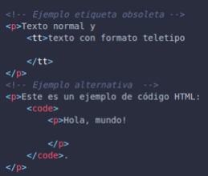

El < abbr title="League Of Legends" > LOL< / > es un juego de estrategia
"


| Etiqueta o atributo obsoleto | Pertenece a... | Descripción | Alternativa actual | Ejemplo (Con la alternativa actual si tiene o con la obsoleta en su defecto) |
|---|---|---|---|---|
| < applet > | No aplica | Un applet es un programa, componente o aplicación que se ejecuta dentro del contexto de otro programa o aplicación escrito en JAVA. | object | |
| < acronym > | No aplica | se utilizaba en HTML para definir un acronimo o abreviar palabras en el contenido web | abbr |
" El < abbr title="League Of Legends" > LOL< / > es un juego de estrategia " |
| <bgsoundm> | No aplica | se utilizaba en HTML para definir un acronimo o abreviar palabras en el contenido webIncorpora sonidos de fondo que se ejecuta cuando se entra a la pagina. Solo es interpretada por Internet Explorer. Acepta formatos Mp3, MID, AU y WAV. <audio> No se reproduce solo, se necesita que el usuario oprima play con el controls que se agrega a la etiqueta y pasa con el preload y que cargue el archivo de audio. | <audio> No funciona sin atributos de control, controls, autoplay y preload | |
| <dir> | No aplica | La etiqueta <dir> era una etiqueta obsoleta en HTML que se utilizaba para crear una lista de elementos de directorio. Cada elemento en la lista representaba un ítem dentro de un directorio, como una carpeta en un sistema de archivos | "actualmente se recomienda utilizar <ul></ul> listas no ordenadas y <ol></ol> listas ordenadas junto con <li> que es el elemento de la lista"</object></td> | |
| <frameset> | No aplica | " Los marcos (frames) son áreas separadas y ajustables dentro de una página web " | CSS Grid o ≷Div> | |
| <noframes> | No aplica | Se usó en HTML 4 para actuar como una etiqueta alternativa para los navegadores que no admitían marcos. | No aplica | |
| <hgroup> | No aplica | El elemento hgroup representa al bloque de encabezado de una sección. Un encabezado de niveles múltiples puede ser usado para proveer subtítulos, títulos alternativos o eslóganes. | <div class="container"> | |
| <isindex> | No aplica | Esta etiqueta se utilizaba para insertar un input de texto , y lo que escribes es buscado en el html | se usa la etiqueta input que debe estar dentro de la etiqueta form | |
| <listing>, <xmp> | No aplica | Listing fue una etiqueta similar a **pre** o **code**, es decir, se utilizaba para insertar codigo y que no fuera interpretado, sino estilizado visualmente. El elemento HTML XMP <xmp> dibuja texto entre las etiquetas de inicio y fin sin interpretar el HTML que se encuentra en medio y lo muestra usando un tipo de letra monoespaciada | <pre> <code> | |
| < noembed > | No aplica | El elemento HTML < noembed > es una forma obsoleta y no estándar de proporcionar contenido alternativo para navegadores que no admiten el elemento < embed > o no admiten el tipo de contenido incrustado que un autor desea usar. El Elemento HTML Embed ( < embed > ) representa un punto de integración para una aplicación externa o de contenido interactivo. | < object > | |
| < strike > | No aplica | Se usaba en html4 para tachar texto en el texto | < del > | |
| < basefont > | No aplica | es una etiqueta que se usaba con la finalidad de darle estilo a los textos no es reconmendable ni se usa en la actualidad | hojas de estilo | |
| < big > | No aplica | Solía utilizarse para aumentar el tamaño del texto dentro de su contenido en relación con el tamaño de fuente normal. | CSS | .texto-grande { font-size: 1.5em; } |
| < blink > | No aplica | La etiqueta < blink > era un elemento HTML que se usaba para crear texto parpadeante en una página web. Esta etiqueta quedó obsoleta en HTML 4.0 y no es compatible con los navegadores modernos. Fue ampliamente considerado como una mala elección de diseño y, a menudo, se asoció con una mala experiencia del usuario. | CSS | |
| < center > | No aplica | < center > (centro) es un elemento obsoleto que crea una caja en bloque con el contenido centrado. | < div align="center" > | |
| < font > | No aplica | Indica el tamaño, color, o fuente del texto que contiene. | CSS | |
| < marquee > | No aplica | Esta etiqueta se utilizaba para insertar un area de texto en movimiento. También se la conoce como marquesina. | CSS,JavaScript | |
| < multicol > | No aplica | Se utilizaba en HTML para definir columnas múltiples en una página web. no era parte de la especificación oficial de HTML y no era compatible con todos los navegadores. La alternativa para crear diseños de varias columnas en HTML y CSS es utilizar las propiedades de diseño de CSS, como column-count, column-width, column-gap, column-rule, etc. | CSS: ""Columnas"" | |
| < nobr > | No aplica | previene que una línea de texto se divida en una nueva línea , es mejor no usarla ya que en sitios web en produccion no funciona para todos los usuarios | utilizar en el css white-space | .parrafo{white-space: nowrap} |
| < spacer > | No aplica | The < spacer > element is used to insert spaces on the web page. Modern browsers don’t support the < spacer > tag. | CSS margin and padding properties instead. | |
| < tt > | No aplica | Esta etiqueta creaba una caja en linea, estaba definida como un elemneto de estilo de fuente de ancho fijo y podia contener cero o mas elementos en linea. | < code > < /code > |  |
| < menu > | No aplica | Se utilizaba anteriormente para definir un menú dentro de un documento web. Su propósito era representar opciones de menú, como las que podrían encontrarse en una barra de navegación o un menú contextual. La etiqueta < menu > en HTML fue abandonada en gran parte debido a la falta de adopción | < nav > | |
| name | "< a >, < embed >,< img >, < option >" | "El atributo name permite a un script acceder a su contenido.Para el elemento meta, el atributo especifica un nombre para la información / valor del contenido. Name especifica un nombre para el elemento. Este atributo nombre se puede utilizar para hacer referencia al elemento en un JavaScript. " | "< a id="" >, < img alt="" >, < option value="" >" | |
| |
||||
| link | < body > | Se utiliza para crear enlaces en paginas web, nos permite vincular una pagina a otra pagina. | < a > | |
| vlink | < body > | "vlink este es un atributo de html que ya no se utliza se considera obsoleto se utilizaba para cambiar el color a los enlaces visitados aquellos que el usuario habia ingresado previamente" | "en lugar de usar ese atributo se se recomienda definir los estilos de enlace en CSS puede usarse con el pseudo-clase:visited " | |
| bgcolor | < body > | es usado para determinar el color de fondo de un párrafo, tabla o cualquier otra parte del HTML. Es recomendable el uso moderado de esta etiqueta. También es recomendable establecer los colores de fondo y los estilos de texto o links, con la ayuda de CSS. Explicaremos con mas detalles cómo puede hacerse eso en un tutorial CSS posterior. Explicaremos con mas detalles cómo puede hacerse eso en un tutorial CSS posterior." | "En lugar de usar el bgcolor, es recomendable usar el background" | |
| align, valign | < table > | Las etiquetas "align" y "valign" se utilizan en HTML para alinear el contenido dentro de una tabla | Este atributo es obsoleto ya que se considera mejor manipular las tablas con CSS | |
| hspace, vspace | < table > < iframe > | Indica espacios en tablas/marcos. hspace de forma horizontal y vspace de manera vertical. | CSS: modelo de cajas | |
| allowtransparency | < iframe > | |||
| frameborder | < iframe > | Puedes poner un borde al marco iframe | utilizar css | |
| scrolling | < iframe > | Usando este atributo podemos controlar la aparición o no de barras de desplazamiento. Los valores que puede tomar: AUTO, YES, NO | Overflow de CSS | |
| align, border | < img > < table > | |||
| cellspacing | < table > | Es mejor usar los estilos CSS desde un archivo para mas control | CSS | |
| cellpadding | < table > | |||
| nowrap | td th | EL atributo "nowrap" evitaba que el contenido de la celda se ajustara automáticamente para encajar dentro del ancho de la celda. | CSS |